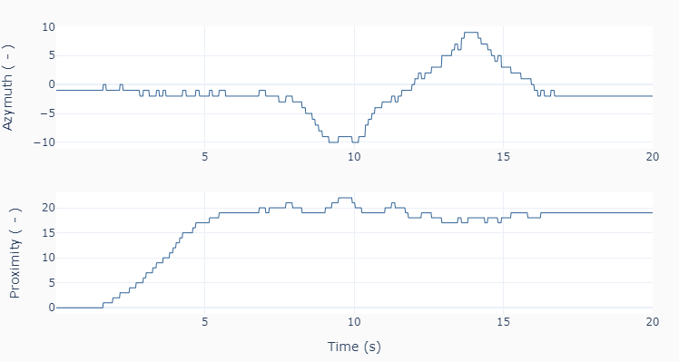

Infrared Tracking
During the loop execution of this example code, the infrared sensor tracks the LEGO® beacon as it’s moved from really close to the sensor to about 50 centimeters away. Then the beacon is moved from side to side, for about 50 centimeters as well.
Note
Make sure the beacon is ON and on channel 1, and placed in front of the sensor before you run the example.
""" tracking.py
Use the infrared sensor to track the LEGO beacon.
Setup:
Connect infrared sensor to port number 1.
"""
# Importing modules and classes
import time
import numpy as np
from pyev3.utils import plot_line
from pyev3.brick import LegoEV3
from pyev3.devices import Infrared
# Defining parameters
tstop = 20 # Execution loop duration (s)
tsample = 0.02 # Data sampling period (s)
tdisp = 0.2 # Screen display period (s)
# Pre-allocating output arrays
t = []
azymuth = []
proximity = []
# Creating LEGO EV3 objects
ev3 = LegoEV3()
ired = Infrared(ev3, portnum=1, inputmode='seeker')
# Initializing current time stamp and starting clock
tprev = 0
tcurr = 0
tstart = time.perf_counter()
# Changing EV3 status light
ev3.set_statuslight(mode='pulsing')
# Running execution loop
print('Running for', tstop, 'seconds ...')
while tcurr <= tstop:
# Getting current azymuth and proximity
(azymcurr, proxcurr) = ired.output
# Updating previous time and getting current time (s)
tprev = tcurr
tcurr = time.perf_counter() - tstart
# Displaying azymuth and proximity every `tdisp` seconds
if (np.floor(tcurr/tdisp) - np.floor(tprev/tdisp)) == 1:
print('Azymuth =', azymcurr, ', Proximity =', proxcurr)
# Acquiring data every `tsample` seconds
# and appending values to output arrays
if (np.floor(tcurr/tsample) - np.floor(tprev/tsample)) == 1:
t.append(tcurr)
azymuth.append(azymcurr)
proximity.append(proxcurr)
print('Done.')
# Closing brick connection
ev3.set_statuslight(mode='solid')
ev3.close()
# Plotting results
plot_line([t]*2, [azymuth, proximity],
yname=['Azymuth ( - )', 'Proximity ( - )'], axes='multi')